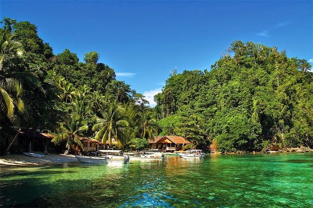
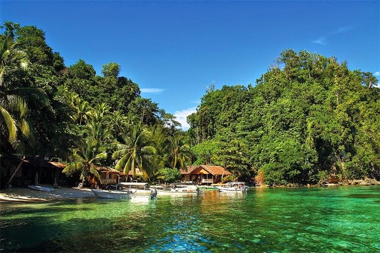
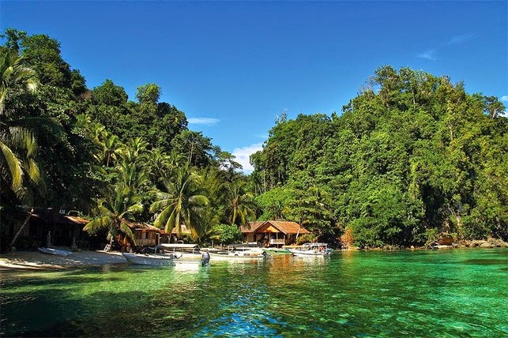

Selamat Datang Di Website Kepulauan Togean

 


Selamat Datang Di Website Kepulauan Togean

Kepulauan Togean terletak di tengah Teluk Tomini, dan secara administratif termasuk dalam wilayah Kabupaten Tojo Una-Una, Sulawesi Tengah. Kepulauan ini terdiri dari sekitar 50 pulau besar dan kecil, dengan pulau-pulau utama seperti Pulau Batudaka, Pulau Togean, dan Pulau Una-Una. Secara geografis, Togean sangat unik karena terbentuk oleh aktivitas vulkanik. Keindahan alam dan keanekaragaman hayatinya diakui secara resmi dengan penetapan sebagai Taman Nasional Kepulauan Togean pada tahun 2004. Kepulauan ini juga merupakan rumah bagi Suku Bajo, yang dikenal sebagai "pengembara lautan," mencerminkan sejarah dan budaya masyarakat yang sangat erat dengan kehidupan bahari.
Kepulauan Togean dikenal luas sebagai surga bawah laut dan destinasi wisata bahari unggulan. Daya tarik utamanya adalah Diving dan Snorkeling, karena Togean memiliki keunikan berupa tiga jenis terumbu karang utama dunia (karang penghalang, karang atol, dan karang tepi) serta keanekaragaman biota laut yang sangat kaya.
Selain pariwisata bahari, masyarakat di Kepulauan Togean memiliki potensi besar di sektor perikanan dan kelautan. Sektor perikanan adalah mata pencaharian utama, dengan hasil tangkapan laut yang beragam menjadi komoditas lokal. Selain itu, terdapat potensi perkebunan skala kecil yang menanam komoditas seperti kelapa dan cengkeh. Pengelolaan pariwisata yang berkelanjutan menjadi fokus utama pemerintah daerah dan masyarakat untuk memastikan keindahan alam Togean tetap lestari sebagai aset nasional.
Sulawesi tengah
Pulau papan
Danau Ubur-ubur
Pantai Karina